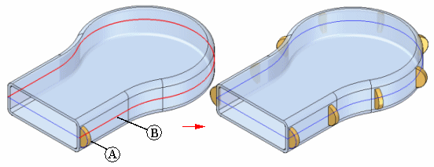
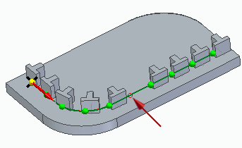
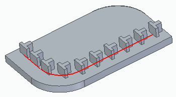
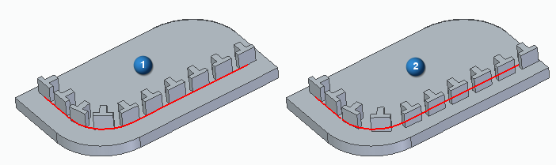
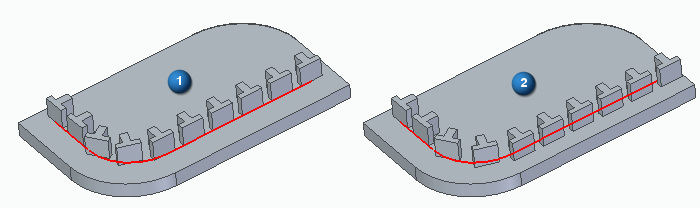
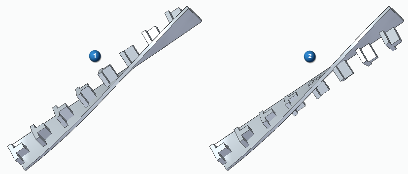
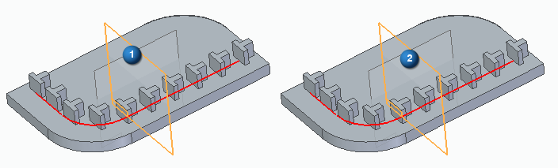
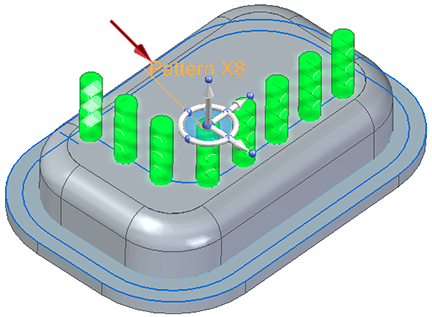

Along Curve pattern command (synchronous)
The Home tab → Pattern group → Along Curve  is a pattern command. The Along Curve command is available in the synchronous part and sheet metal environments, ordered
part and sheet metal environments, and assembly environments for patterning parts
and features.
is a pattern command. The Along Curve command is available in the synchronous part and sheet metal environments, ordered
part and sheet metal environments, and assembly environments for patterning parts
and features.
The command works a little differently in each environment. This topic describes the command bar options for the synchronous environment. The command bar options for the other environments are described here:
The command provides options to control how the pattern is defined by identifying the curve that the patterned elements follow, and then provides customizing parameters such as start point and transformation type, as well as occurrence count, spacing, and orientation.
The elements can be pattern along any 2D or 3D curve or model edge. For example, you can pattern a feature (A) along a set of sketch elements (B).

Along Curve pattern command bar for the synchronous environment
The Along Curve pattern assembly command bar options include:
- Select
-
This command does not become available until one or more features have been selected. Click on the features to be patterned then select the Home tab → Pattern group → Along Curve command. This action opens the Along Curve command bar to allow you to select the element to use for the pattern. The Select has two options, Single and Chain. After selecting the edge or curve chain to use for the pattern, right-click or press Enter to accept.
You are prompted to click the anchor point. Select the anchor point and then the direction for the pattern. Right-click or press Enter to accept.
- Modify the Pattern
-
The Along Curve command bar displays 6 new options used to modify the pattern.
CountSets the total number of instances in the pattern including the parent instance.
Reference PointSets the reference point for the pattern. Click on any placed instance to move the reference point to that location.
- Suppress Instance
-
Used to suppress one or more instances of the pattern. Click on any instance to turn off the instance. Click on the red circled instance location to restore a previously suppressed instance. To restore all suppressed instances, click on the Reset option. Right-click or press Enter to accept.

- Insert Occurrence
-
Inserts a new instance of the pattern. Click on any instance, vertex, or midpoint on the path and enter an Offset value to place a new instance. Right-click or press Enter to accept.
- Advanced
-
Select this option to display the advanced options. The advanced options include the Occurrence Orientation and the Rotation Type.
After selecting the occurrence orientation and the rotation type, click to accept and close the Advanced options window.
- Occurrence Orientation
-
There are 5 types of the Occurrence Orientation.
- Simple
-
Maintains the orientation of the parent. No Rotation Type option.

- Follow Curve
-
Orients parent to align with curve. Rotation Type: (1) Curve Position (2) Feature Position

- Follow Curve Chord
-
Orients parent to align with curve chord. Rotation Type: (1) Curve Position (2) Feature Position

- Using Surface
-
Orients parent to align with the Selection Type. Selection type options are Single (face), Chain (face or face chain), or a Body Rotation Type: (1) Curve Position (2) Feature Position.

- Using Plane
-
Orients parent to align with selected reference plane.

- Fill Style
-
There are 4 Fill Style options.
- Fit
-
The Fit pattern type only supports a Count option. The count value is the total number of occurrences that will be placed for the selected curve length including the parent. The Spacing value is the resulting spacing value.
- Fill
-
The Fill pattern type only supports a Spacing option. The count value is the total number of occurrences that will be placed for the selected curve length including the parent. The Spacing value is specified.
- Fixed
-
The Fixed pattern supports a Count and Spacing option. The count value is the total number of occurrences that will be placed for the selected curve length including the parent. The Spacing value is specified.
- Chord Length
-
The Chord Length pattern supports a Count, Spacing, and Skip option. The count value is the total number of occurrences that will be placed for the selected curve length including the parent. The Spacing value is specified as the chord length between two points.
The Skip value only applies to patterns where the Chord Length Pattern Type is specified. The Skip count option is used when more than 1 parent is to be patterned. This allows multiple patterns in sequence along the curve chord.
The skip value is specified as a whole number where the value of 0 means all instances as specified in Count are shown starting with the parent. For a value of 1, alternate instances are created with the parent as the first instance. For a value of 2, every third instance is created with the parent as the first instance. This value can increment up to two less than the total value of the count.
Edit Existing Pattern
To edit the options for an existing pattern, highlight the pattern name in the PathFinder to show the pattern in the model. The pattern is labeled with the number of pattern
occurrences as shown here. Click on the pattern label (red arrow) to edit the pattern
options.
